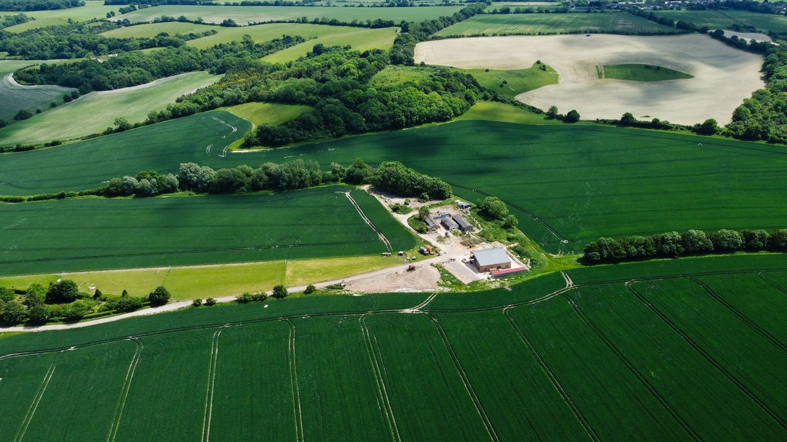
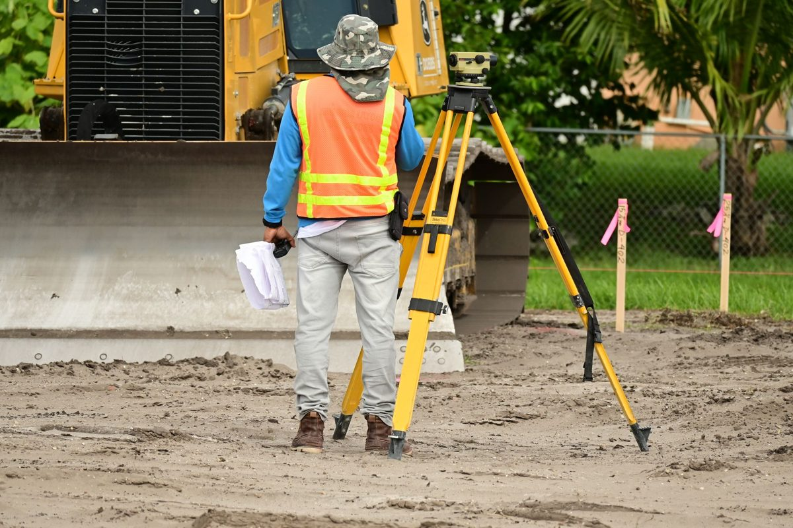
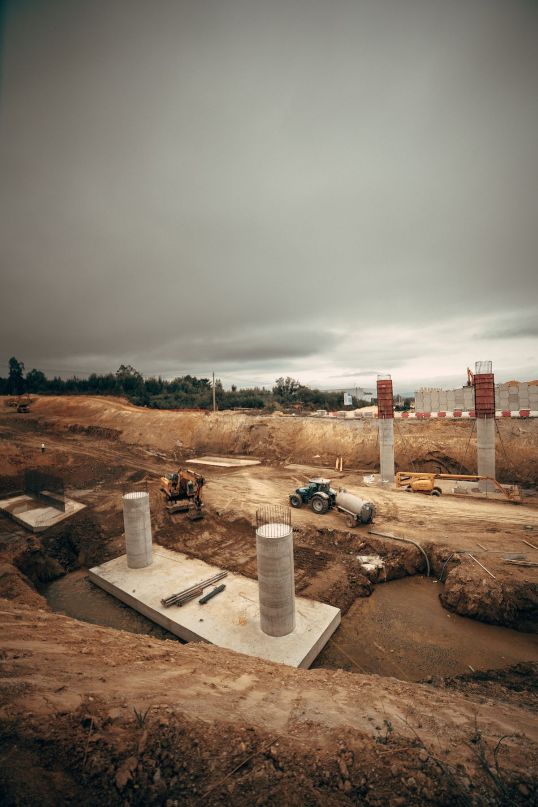
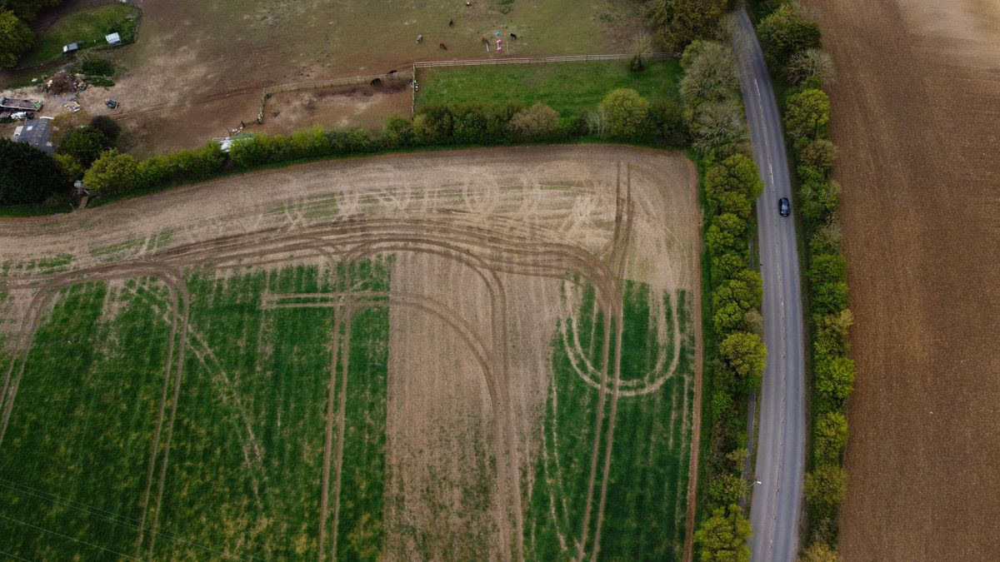
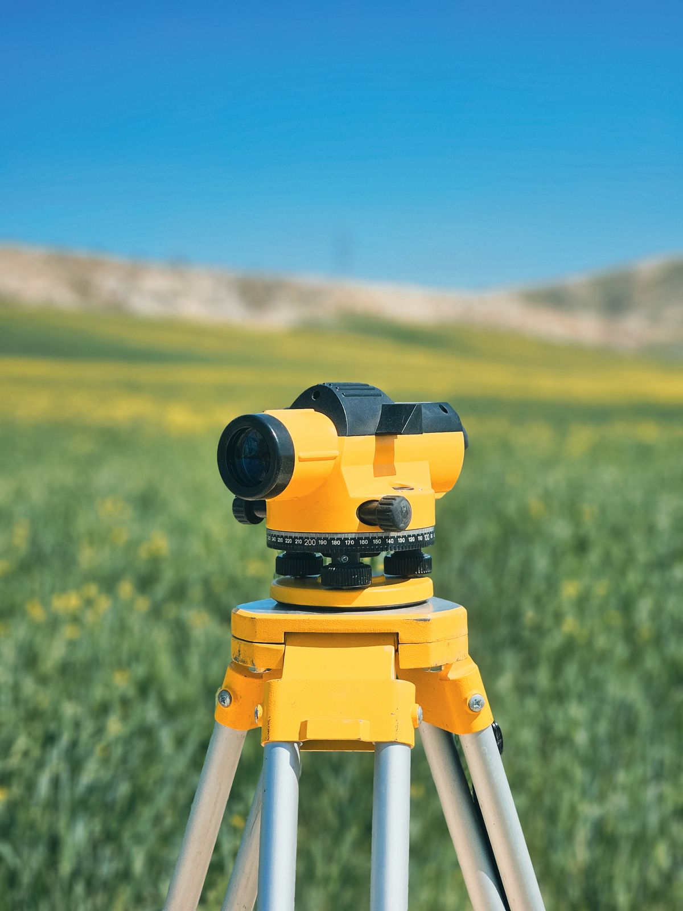
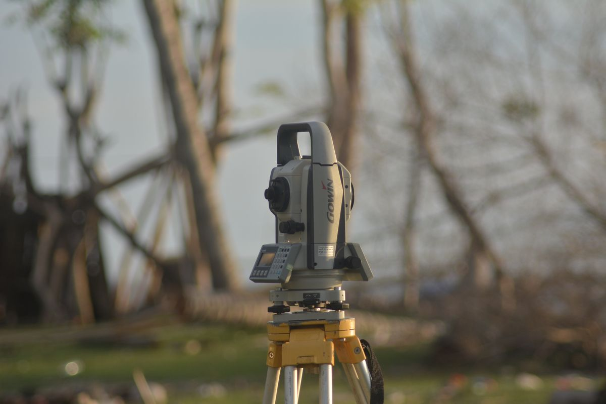

Czym się zajmujemy
Najczęściej przychodzą do nas osoby, które budują dom albo dzielą lub kupują działkę. Poniżej opisujemy, kiedy dana usługa jest potrzebna i co dostajesz na końcu.

Mapa do celów projektowych
Pierwszy krok przed budową. Mierzymy działkę z ukształtowaniem terenu, uzbrojeniem i sąsiednią zabudową, a mapę przyjmuje do zasobu starostwo. Na niej architekt rysuje projekt zagospodarowania.
Potrzebna do pozwolenia na budowę lub zgłoszenia.

Wytyczenie budynku
Przenosimy projekt na działkę: wbijamy paliki w narożnikach i na osiach budynku, tak żeby ekipa mogła zacząć wykopy. Wpis o wytyczeniu robimy w dzienniku budowy.
Przed rozpoczęciem robót ziemnych, a przy przyłączach przed wykopem.

Inwentaryzacja powykonawcza
Mierzymy wybudowany dom, garaż lub przyłącza wody, kanalizacji, gazu i prądu. Przyłącza najlepiej przed zasypaniem wykopu. Operat i mapę dostajesz do odbioru budynku.
Do zawiadomienia o zakończeniu budowy i odbioru przyłączy.

Podziały i rozgraniczenia działek
Dzielimy grunt na mniejsze działki, na przykład pod sprzedaż albo przy podziale spadku. Przy sporze z sąsiadem prowadzimy rozgraniczenie i ustalamy, którędy przebiega granica.
Przy sprzedaży części działki, darowiźnie, spadku albo sporze o granicę.

Wznowienie znaków i wyznaczenie punktów granicznych
Odszukujemy i odtwarzamy w terenie kamienie graniczne albo wyznaczamy punkty granicy, gdy dotąd nie były oznaczone. Sąsiadów zawiadamiamy o czynnościach, a na koniec podpisujemy protokół.
Przed postawieniem ogrodzenia albo gdy nie wiesz, gdzie kończy się działka.

Pomiary do ewidencji i wpis budynku
Nowy dom, rozbudowa albo rozbiórka muszą trafić do ewidencji gruntów i budynków. Przygotowujemy dokumentację, na podstawie której starostwo aktualizuje dane działki i budynku.
Po zakończeniu budowy, przy kredycie, sprzedaży lub rozbiórce.